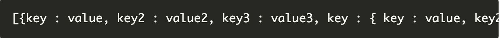
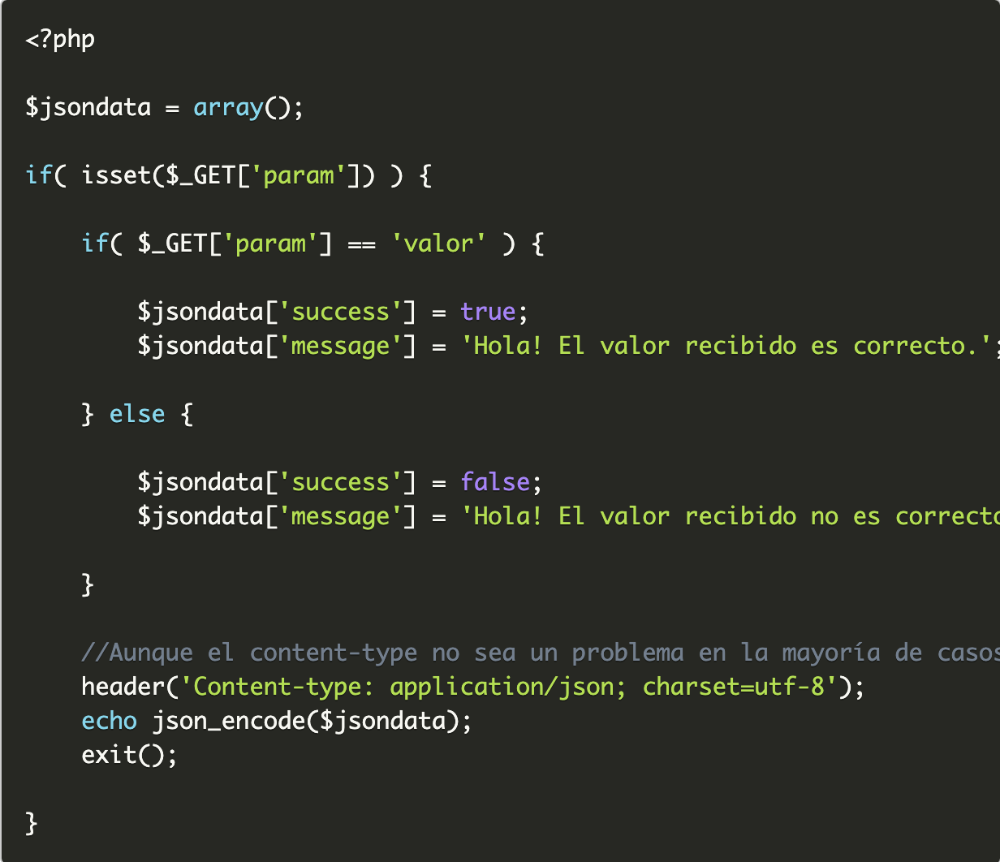
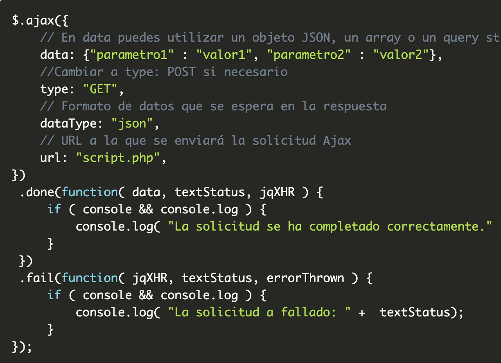

Ajax, jQuery y PHP es una combinación de las que molan. Te permite, con relativamente poco esfuerzo, crear aplicaciones interactivas, dinámicas y atractivas. Y si añadimos JSON como formato de intercambio de datos la cosa aún se pone mejor. En este tutorial vamos a ver un pequeño ejemplo, explicado paso a paso, de todo esto junto y funcionando: jQuery, Ajax, PHP y JSON.
Ajax son las siglas de Asynchronous JavaScript And XML y es una tecnología que permite a una página web actualizarse de forma dinámica sin que tenga que recargarse completamente. JavaScript es el encargado de comunicarse con el servidor enviando y recibiendo datos desde la página web, en el servidor la solicitud es procesada y se envía una respuesta que es interpretada de nuevo por JavaScript en la página web. Aunque con Ajax se puede solicitar cualquier tipo de recurso web, el intercambio de datos entre la página web y el servidor ha sido realizado tradicionalmente, como el propio nombre indica, en formato XML (eXtensible Markup Language), un lenguaje de marcas que permite definir una gramática específica y, por tanto, permite el intercambio de información estructurada y legible. Y llegó JSON (JavaScript Object Notation), más ligero y con una notación más simple, y se convirtió en el formato más utilizado para el intercambio de datos cuándo se trabaja con Ajax. Además, con una ligera variación (JSONP) puede utilizarse en solicitudes Ajax entre diferentes dominios (cross-domain). El formato JSON tiene la siguiente notación:
Y también puede ser serializado y multidimensional, por ejemplo:
En cualquier instalación estándar de PHP, desde la versión 5.2.0, se incorpora de forma predeterminada la extensión JSON y es muy fácil pasar los datos de un array a notación en JSON. Aunque si no se cuenta con esta extensión se puede construir la notación JSON de forma manual, es recomendable tenerla si vas a trabajar de forma frecuente con datos en formato JSON. Entre las funciones de la extensión JSON para PHP que nos interesan, la más imprescindible es la función json_encode(). Con esta función podemos pasar nuestros datos a formado JSON rápida y fácilmente. Sólo es necesario tener los datos en forma de array u objeto. Por ejemplo:
Uno de los argumentos del método jQuery.ajax() es dataType y aquí podemos especificar que vamos a utilizar datos JSON en la respuesta. Si no especificamos nada en dataType, jQuery intetará detectar de forma automática el formato de los datos recibidos. Si en la respuesta desde el servidor se especifica, como hicimos en el ejemplo anterior, el tipo de contenido, será más fácil para jQuery tratar los datos correctamente. Utilizando jQuery.ajax() tendría un aspecto similar a:
